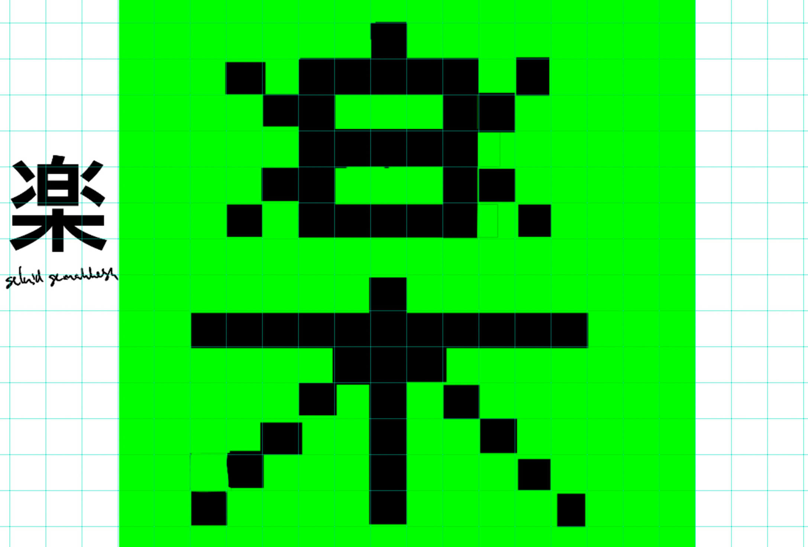
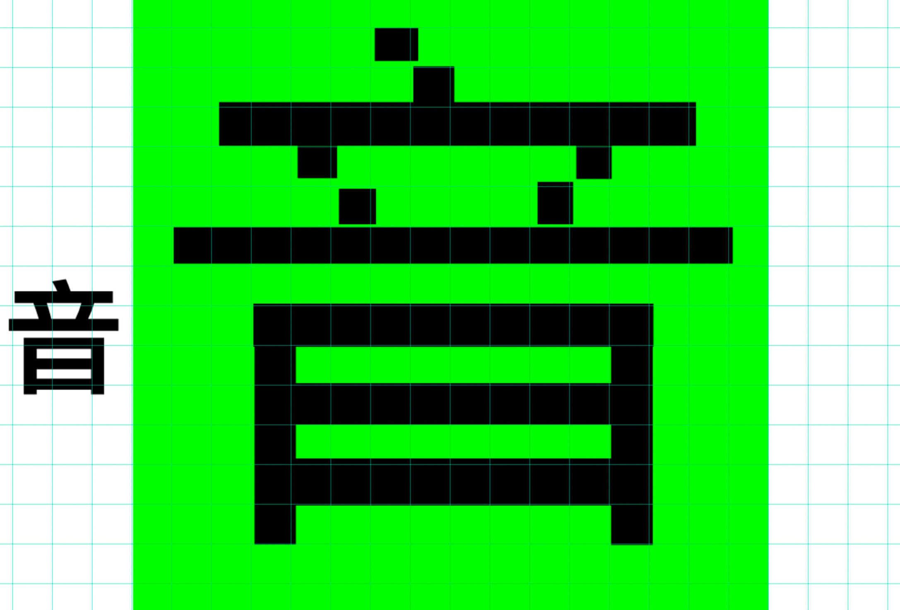
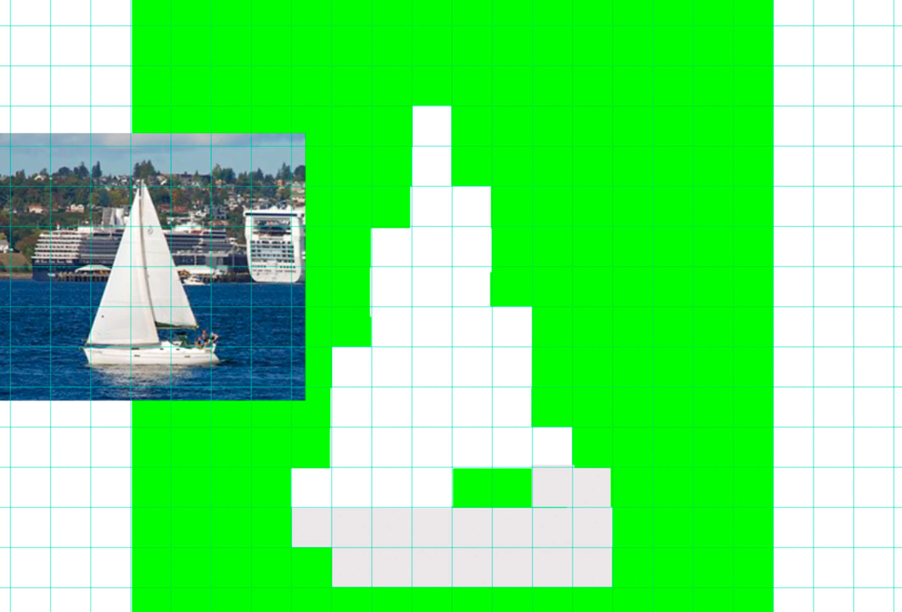
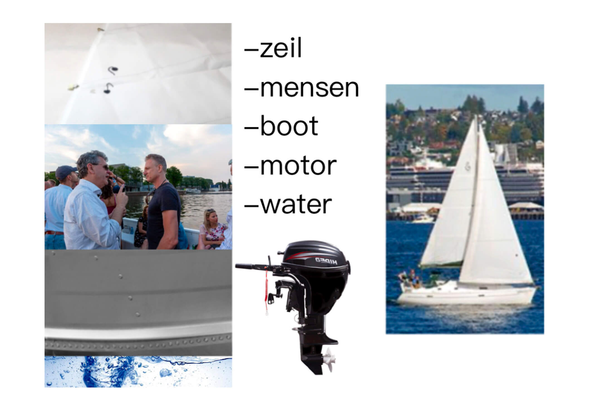
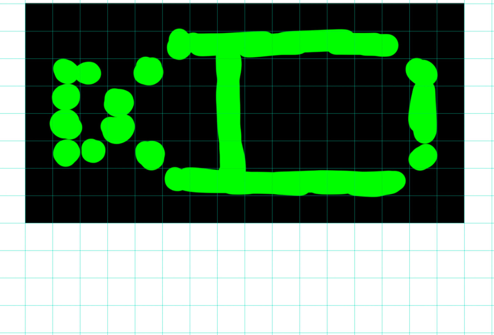
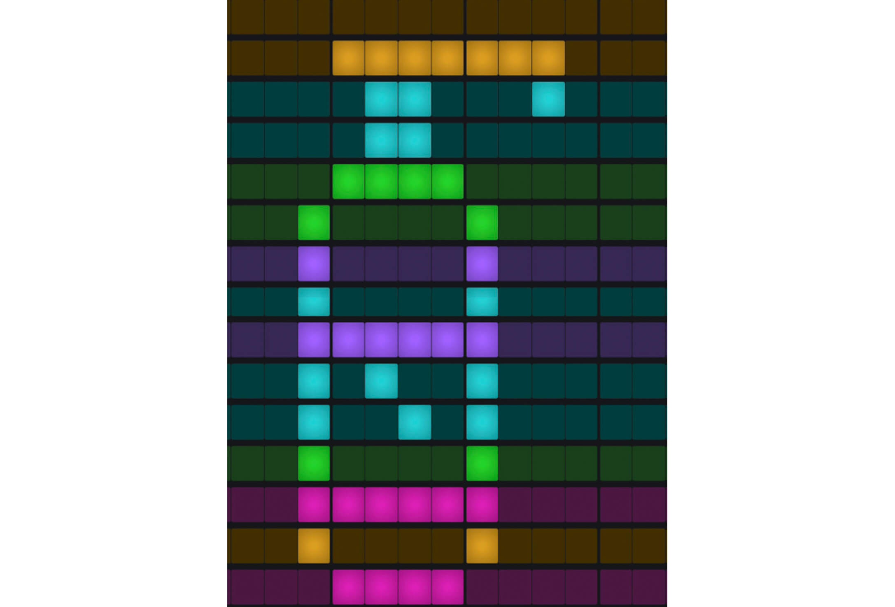

Toen ik klein was, gebruikte ik GarageBand om te tekenen in de beatsequencer. Hierdoor kwam ik erbij het te gebruiken om er vormgegeven voorwerpen in te tekenen en zo geluid bij de tekening te krijgen. Voor deze opdracht wilde ik graag de voorwerpen geluiden laten maken van het voorwerp zelf of geluiden die ik erbij associeer. Helaas kan je in GarageBand geen andere geluiden gebruiken, maar alleen de standaard geluiden van het programma zelf. Om die reden ben ik verschillende dingen gaan uitproberen. Uiteindelijk heb ik de stemopname-functie gebruikt en de balken zo geknipt dat deze ook de vorm krijgen van een product. In dit geval is het een pompje met ontsmettingsmiddel. Dat kom je tegenwoordig overal tegen. Ik denk niet dat ik zo’n pompje ooit nog hetzelfde zal zien, zonder deze tijd erbij te associëren. Daarom heb ik het pompje geluiden gegeven van deze tijd.
De andere foto’s en video’s geven het proces weer en laten andere voorwerpen zien, zoals de Japanse karakters voor muziek (muziek en gemakkelijk) die ik de geluiden van traditionele Japanse instrumenten heb gegeven. Ook heb ik het proces van de zeilboot erbij gedaan om te laten zien hoe ik het geluid bij de voorwerpen heb gedaan. Met de Dopper heb ik als eerste gekeken of de stemopname-functie goed werkte.
When I was little, I used the beat sequencer of GarageBand to draw. This is why I remembered to use it to draw objects and add sounds to my drawings. For this assignment I wanted to use the sounds from the objects itself or sounds that I associated with them. Unfortunately, GarageBand only allows you to use standard sounds provided by the program itself. For that reason I started trying different things. I found out that I could use the voice recording function and cut the soundbars in the shape of the objects that I wanted to use. In this case it is a disinfectant pump. You can see those everywhere nowadays. I don't think I will ever look at a such pump again without associating it with the time we are in right now. This is why I gave it sounds that are typical for present time.
The other photos and videos show the process and other objects, such as the Japanese characters for music (music and easy) that I gave the sounds of traditional Japanese instruments. I also included the process of the sailboat to show how I added the sound to the different objects. The first object I used to check whether the voice recording function worked well, was the Dopper bottle.
Click here to talk with the artist!
     